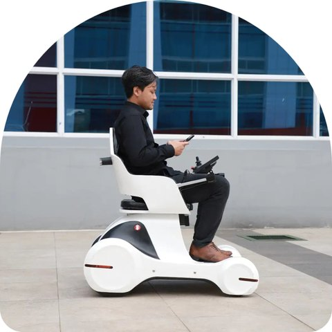
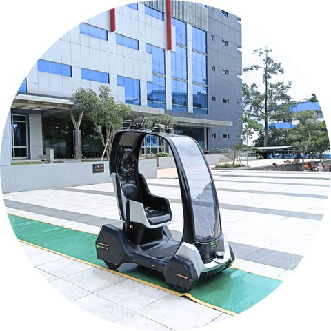
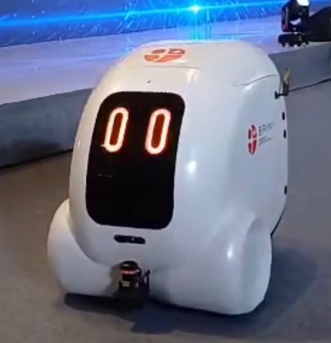
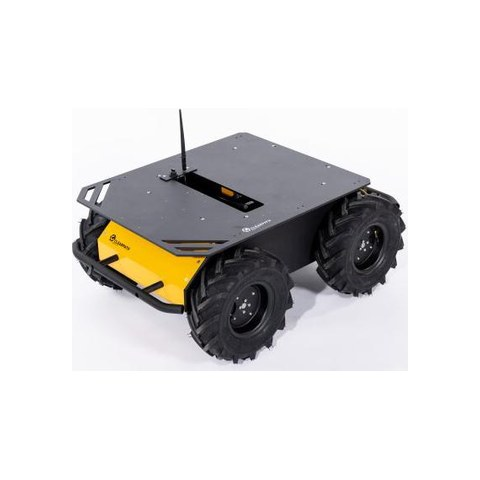
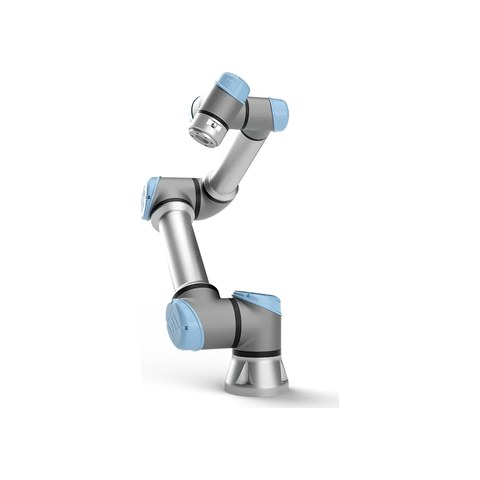
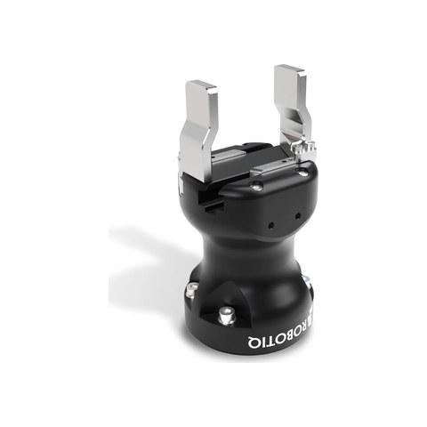
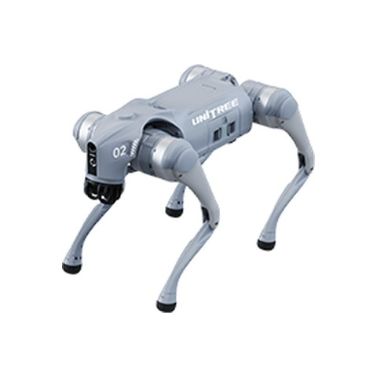
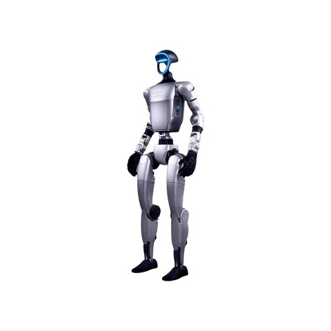
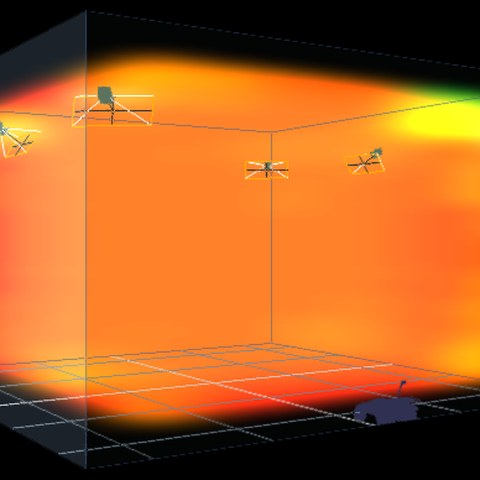
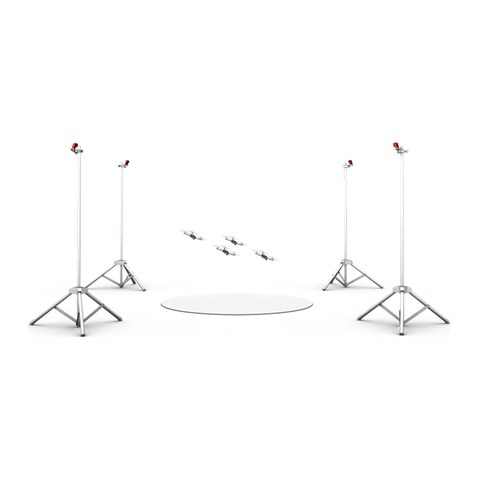

Our Lab
Robotics and System Intelligence (RoSI) Research Group, Research Centre for Smart Mechatronics, BRIN, Bandung.
RoSI researches and develops intelligent robotic technologies by integrating artificial intelligence, multimodal perception and sensing, and autonomous control and planning. Our goal is robots that are reliable, safe, and deployable in real-world environments.
The group is interdisciplinary, bringing together mechanical engineering and mechatronics, computer science, electrical engineering, engineering physics, and industrial engineering. Our work targets smart mobility, industrial applications, and public services.
Our research areas are listed on the Research page, and more information is on the RoSI page on the BRIN website.
Robots and platforms

I-SEATER
I-SEATER is the indoor variant of SEATER (Single-passenger Electric Autonomous Transporter), a compact vehicle for first- and last-mile mobility inside buildings and confined areas. Its differential drive, with two independently driven rear wheels, lets it turn on the spot in narrow corridors, and it can be driven manually or run autonomously. We use it to study indoor localisation, docking, and navigation.

O-SEATER
O-SEATER is the outdoor variant of SEATER, built more ruggedly to carry a passenger along mapped routes between buildings in an integrated complex. It is our main platform for outdoor localisation research, where we fuse wheel odometry, inertial sensing, GPS, and vision, and for work on lane detection and path-tracking control.

DELL-E
DELL-E is our last-mile delivery robot. It runs on ROS 2 and combines LiDAR, inertial sensing, and satellite positioning for mapping, localisation, and navigation, both indoors and outdoors. It is also the platform on which we develop and test our complete autonomy software stack.
Alongside these, we develop inspection robots: mobile and quadruped platforms that carry multimodal sensor payloads.
Research platforms

Clearpath Husky A200
The Husky A200 is a rugged four-wheel, skid-steer unmanned ground vehicle built for outdoor research. We use it as a carrier for 3D LiDAR and 360-degree cameras in outdoor localisation and perception experiments.

Universal Robots UR5e
The UR5e is a six-axis collaborative robot arm with a 5 kg payload, an 850 mm reach, and a built-in force/torque sensor. We use it for research on manipulation, force and admittance control, and learning-based control.

Robotiq Hand-E
The Hand-E is a two-finger parallel gripper with a 50 mm stroke, designed for collaborative robots. It is mounted on our UR5e for grasping and pick-and-place experiments.

Unitree Go2 Pro
The Go2 Pro is a quadruped robot with an onboard LiDAR. We use it for research on legged locomotion and as a mobile base for inspection in terrain that wheeled robots cannot handle.

Unitree G1 EDU
The G1 EDU is a compact humanoid robot whose education version is open for programming and development. It is our newest platform, used for work on humanoid locomotion and whole-body motion.
Facilities

Vicon Vero v2.2 motion capture (6 cameras, fixed)
Six Vicon Vero v2.2 cameras are installed permanently around our test area. The system provides ground-truth position and orientation, which we use to validate the localisation and control of our mobile robots.

OptiTrack Flex 3 motion capture (4 cameras, mobile)
Four OptiTrack Flex 3 cameras on tripods form a portable setup that can be moved to wherever an experiment takes place. We use it for manipulation experiments and learning from demonstration.
- GPU workstation for deep learning
- 3D printing and mechanical prototyping
Team
Roni Permana Saputra, S.T., M.Eng.Sc., Ph.D., Research Group Leader
- Ing. Ir. Afrias Sarotama, M.Sc.
- Arif Santoso, S.T.
- Aryo Putro Sadono, M.T.
- Catur Hilman Adritya Haryo Bhakti Baskoro, M.T.
- Dimas Sangaji, S.T.
- Dr. Dyah Kusuma Dewi, S.T., M.T.
- Erik Adiwiguna, M.T.
- Prof. Dr. Estiko Rijanto
- Dr. Harry Septanto, S.T., M.T.
- Hendri Maja Saputra, M.T.
- Midriem Mirdanies, M.T.
- Muhammad Hafil Nugraha, M.T.
- Dr. Rilo Berdin Taqriban, S.T., M.T.
- Shinta Rohmatika Kosmaga, S.T.
- Vita Susanti, S.Kom.
Work with us
We welcome research collaboration, visiting researchers, and student interns. Please get in touch at roni.permana.saputra@brin.go.id.